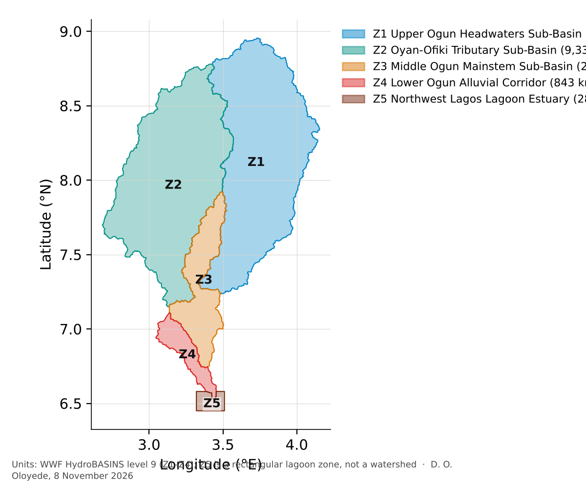
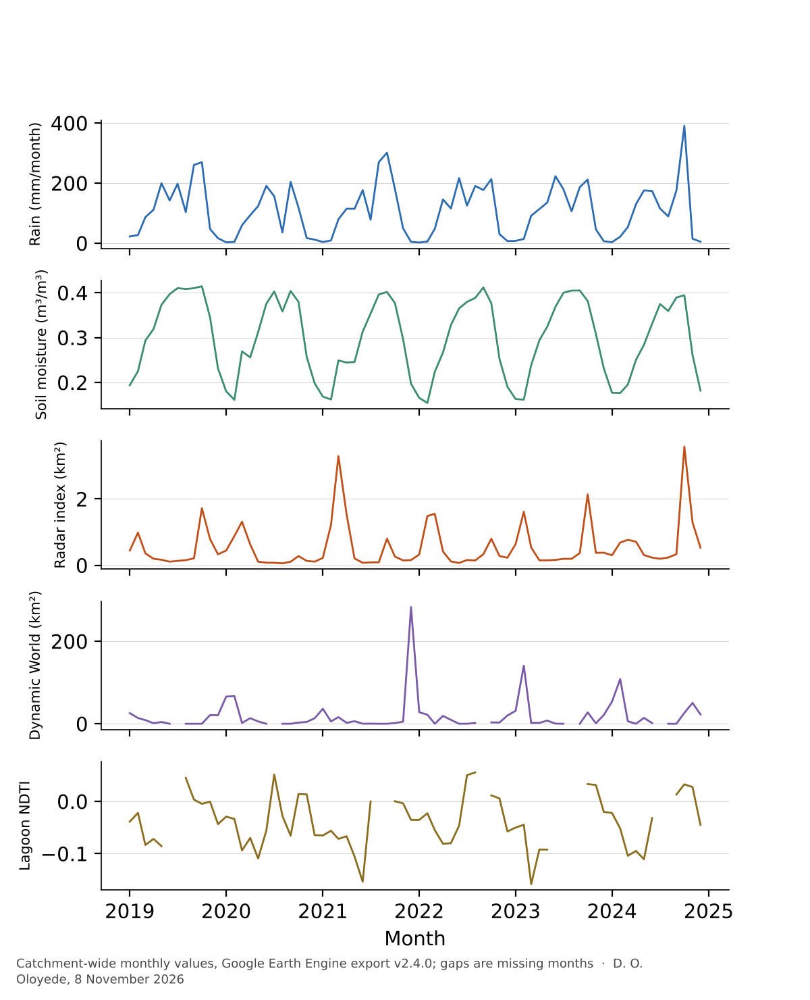
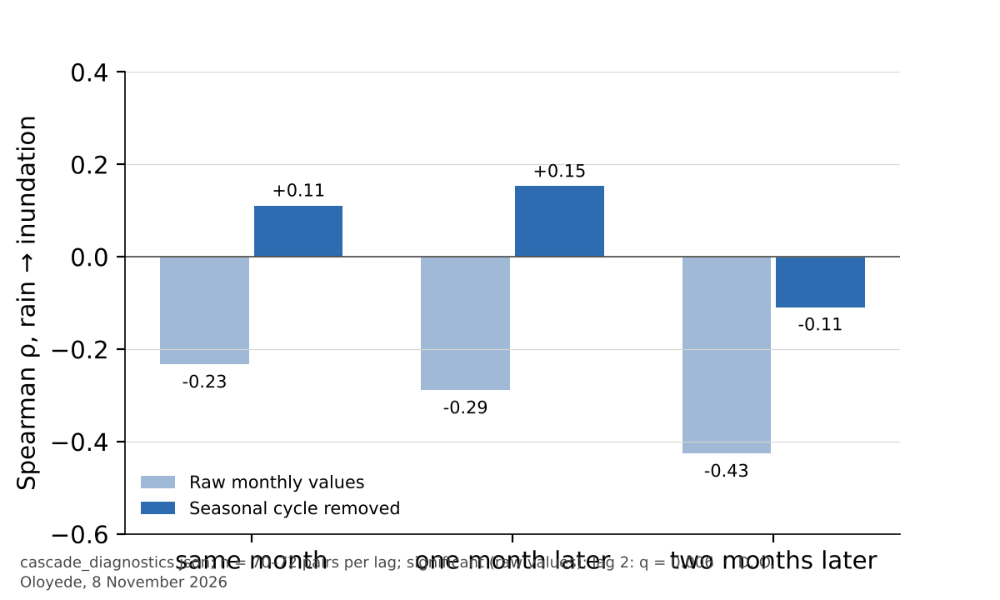
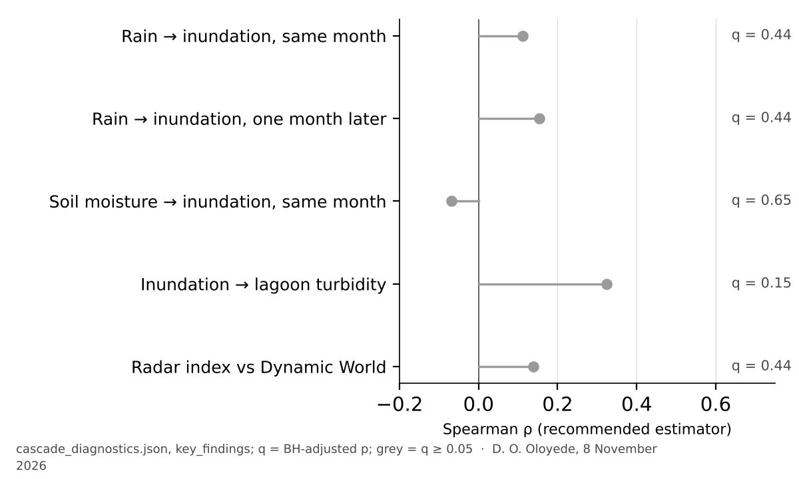
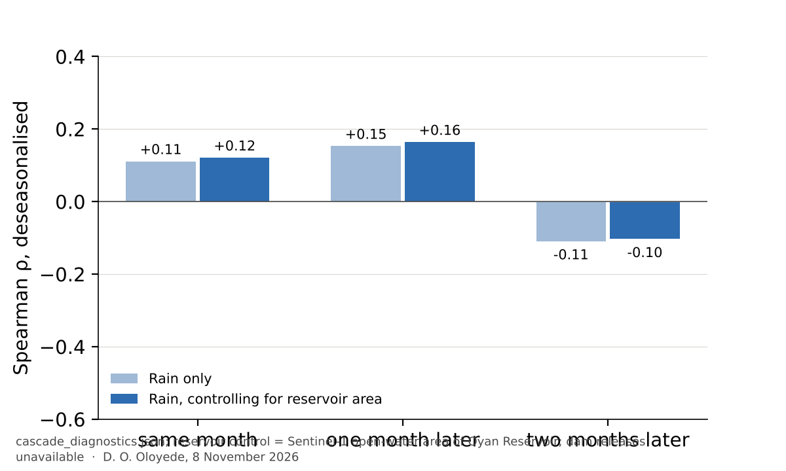
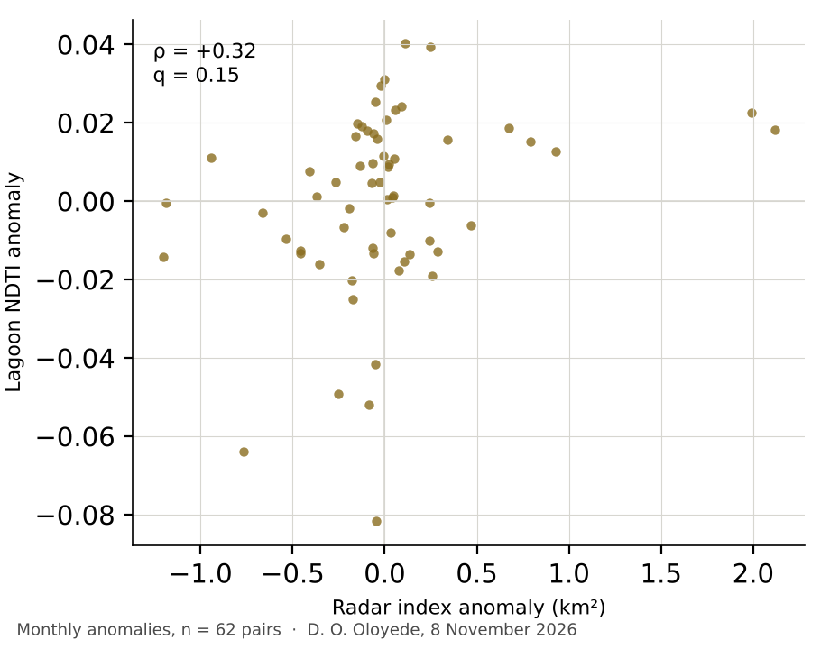
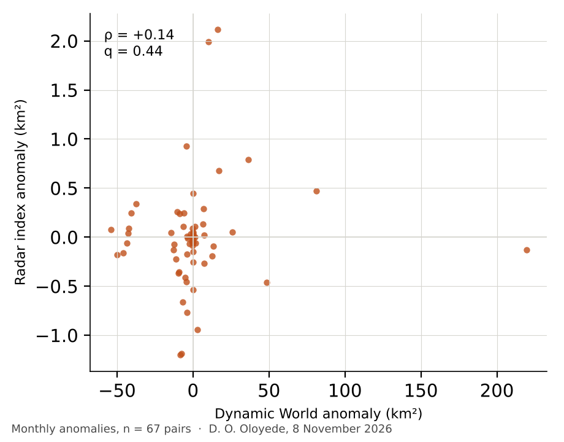

Monthly rainfall, soil moisture and floodplain inundation in the Ogun River catchment, Nigeria, 2019–2024
Satellite records for four upland sub-basins and the Lagos Lagoon estuary
Abstract
Background. The Ogun River drains about 22,165 km² of south-west Nigeria into the Lagos Lagoon. Rainfall and soil wetness control how much of the floodplain floods and how much sediment reaches the lagoon, but few studies have tested their month-to-month coupling with satellite data in this basin.
Aim. To assemble a monthly satellite record of rainfall, shallow soil moisture, radar-derived floodplain inundation and lagoon turbidity for 72 months (January 2019 to December 2024), and to test whether rainfall and soil moisture are associated with inundation, and inundation with turbidity.
Methods. Monthly series were built from CHIRPS rainfall, ERA5-Land soil moisture (0–7 cm), Sentinel-1 radar inundation, Sentinel-2 turbidity (NDTI) and Dynamic World flooding as an optical reference, averaged over four upland sub-basins (Z1–Z4) and the estuarine zone (Z5). Associations were tested at lags of 0 to 2 months, on raw and seasonal-cycle-removed series, using Spearman's rho with autocorrelation-adjusted p-values, as the diagnostics recommend. Five headline relationships were corrected once for multiple testing (Benjamini–Hochberg).
Results. On raw monthly values, rainfall and inundation are associated at a two-month lag (−0.43, q = 0.006), and soil moisture and inundation in the same month (−0.38, q = 0.037). Both are seasonal co-variations that vanish once the seasonal cycle is removed. None of the 5 headline relationships on the anomalies is significant after correction; the largest is between inundation and lagoon turbidity (ρ = +0.32, q = 0.15). The radar index ranks months like the optical Dynamic World product in the seasonal cycle (ρ = +0.42) but not in anomalies (ρ = +0.14), and its values are far smaller (maximum 3.58 km² against 283 km²).
Conclusions. Over six years, rainfall, soil moisture and radar inundation share a seasonal cycle but show no robust month-to-month coupling. The radar inundation index is uncalibrated and should be treated as relative. Its flood extent should not be cited until it is validated against gauge or optical data.
Keywords: Ogun River; floodplain inundation; Sentinel-1; CHIRPS; ERA5-Land; lagoon turbidity; time series; Nigeria
1Introduction
Floodplains store water and sediment between a river and its estuary. How much of a floodplain goes under water in a given month depends on rainfall, on how wet the soil already is, and on any reservoir upstream. Radar satellites can map inundation through cloud. The Sentinel-1 processing chain developed for automated flood mapping (Twele et al., 2016) is one such approach, and Google's Dynamic World product provides an optical land cover record that includes flooded vegetation and open water (Brown et al., 2022).
Gauge-based studies of the Ogun basin and its rainfall–flood behaviour exist, but in our review limited evidence was found for a single satellite record that combines rainfall, soil moisture, floodplain inundation and lagoon turbidity at monthly resolution. This study asks whether such a record can show how rainfall and soil moisture relate to floodplain inundation, and whether inundation relates to turbidity in the lagoon, over 2019 to 2024.
2Study area
The Ogun River drains about 22,165 km² of south-west Nigeria, from the Oyo Basement Complex in the north to the Lagos Lagoon in the south. The catchment is divided into four hydrological sub-basins derived from HydroBASINS level 9 (Lehner & Grill, 2013). The fifth unit, Z5, is a rectangular lagoon zone at the river's outlet; it is not a watershed and is used only for turbidity (Figure 1).

3Data and methods
| Variable | Product | Resolution | Processing |
|---|---|---|---|
| Rainfall | CHIRPS pentad (Funk et al., 2015) | 0.05° | Monthly total; kept when at least five pentads exist |
| Shallow soil moisture | ERA5-Land monthly (Muñoz-Sabater et al., 2021) | 0.1° | Volumetric water, 0–7 cm |
| Floodplain inundation (index) | Sentinel-1 GRD, VV, IW, ascending | 10 m, focal 50 m | Radar water index; uncalibrated |
| Flooding reference | Dynamic World V1 (Brown et al., 2022) | 10 m | Water or flooded vegetation, same domain |
| Lagoon turbidity | Sentinel-2 SR | 10 m | NDTI = (B4 − B3)/(B4 + B3) over open water (MNDWI > 0) |
| Reservoir | Sentinel-1 open water, Oyan Reservoir | 10 m | Area used as a regulation proxy; dam releases not available |
| Catchment and units | HydroBASINS level 9 (Lehner & Grill, 2013) | Vector | Upstream units traced from the Ogun mouth |
Each variable is averaged over its unit and reported as a monthly series (Figure 2). Missing months are kept as missing and excluded pairwise. Dynamic World has 67 valid months; turbidity has 62, and 10 months are missing, mostly in the cloudy wet season.
Two series are tested in two forms. The raw series show the seasonal co-variation. The anomaly series subtract each calendar month's six-year mean, so only month-to-month departures remain:
Association is measured with Spearman's rho, the estimator the diagnostics recommend when either series is not normally distributed. Its p-value is adjusted for autocorrelation with an effective sample size. Lags of 0, 1 and 2 months are tested. The five headline relationships on anomalies form one family, corrected once with Benjamini–Hochberg false discovery rate control (Benjamini & Hochberg, 1995); the result is reported as q. The Pearson correlation and its interval are given for transparency, but they are not used to decide significance. The reservoir control removes the linear effect of reservoir area before testing rainfall and flooding.
Full method, code and tests: repository. The diagnostics file is docs/data/cascade_diagnostics.json.
4Results
4.1Seasonal pattern
Averaged by calendar month, rainfall peaks in October, soil moisture in September and the radar inundation index in October. The largest radar value is 3.58 km², in October 2024. The optical Dynamic World series reaches 283 km² in its largest month, so the two are on very different scales (Figure 2).

4.2Raw monthly values
On raw values, rainfall and radar inundation are negatively associated at a lag: rain two months earlier goes with less flooding now (−0.43, q = 0.006). Soil moisture and flooding in the same month show a similar negative association (−0.38, q = 0.037). These are the seasonal co-variations the data would show in any two series that share an annual cycle. Their sign is not explained by a mechanism here, and the seasonal test below removes them (Figure 3).

4.3Month-to-month anomalies
With the seasonal cycle removed, rainfall and flooding in the same month show a positive association (ρ = +0.11, q = 0.44) that is not significant after correction. A one-month lag gives ρ = +0.15 (q = 0.44). The Pearson correlation for the same month is +0.38 (95% interval +0.17 to +0.56), but Pearson is sensitive to a single extreme month. Leaving out October 2024 alone gives r = +0.19 (95% interval −0.04 to +0.41). Soil moisture and flooding give ρ = −0.07 (q = 0.65). Of the 5 headline relationships, 0 is significant after correction (Figure 4).

4.4Reservoir
Controlling for the open-water area of Oyan Reservoir leaves the same-month anomaly association almost unchanged (ρ = +0.12, against +0.11 without the control). The reservoir is therefore not the explanation for the absence of a month-to-month link. Dam release records are not available, so the regulation effect is only partly tested (Figure 5).

4.5Flooding and lagoon turbidity
Lagoon turbidity (NDTI) and radar inundation anomalies are positively associated (ρ = +0.32, q = 0.15), the largest association among the headline relationships, but it is not significant after correction. The NDTI is an uncalibrated indicator, not NTU or mg/L (Figure 6).

4.6Agreement with the optical reference
The radar index and the Dynamic World flooding series rank months alike in the seasonal cycle (ρ = +0.42), but not in the anomalies (ρ = +0.14, q = 0.44). Its magnitude is far below the optical extent, so the index should be read as a relative measure of wet-season flooding, not an area (Figure 7).

5Discussion
Rainfall, soil moisture and radar inundation share a seasonal cycle in this catchment, and that shared cycle is what the raw correlations show. Once it is removed, no headline relationship survives correction. A link between rainfall and flooding is therefore plausible from the seasonal pattern, but this six-year record cannot show that it operates from month to month. Longer records, which would give more years to estimate the climatology from, are the first requirement.
The inundation index is the weakest part of the chain. It ranks months like the optical reference in the seasonal cycle, but its magnitude is far smaller, and it does not agree in anomalies. Until it is calibrated against gauge or optical water extent, the conclusions about flooding should be read as indicative.
6Limitations
- Six years give only six values per calendar month, so the anomalies depend on the six-year climatology and on individual years.
- Monthly resolution is coarser than the travel time of water across the upland catchment. Lagged results may reflect storage in soil and floodplain rather than flood routing.
- The radar inundation index is uncalibrated and far smaller than the optical reference.
- NDTI is an uncalibrated indicator and is missing mostly in the wet season, so turbidity results lean towards the dry season.
- Dam release records are not available; only the reservoir's open-water area is used.
- CHIRPS (about 5 km) and ERA5-Land (about 9 km) are coarse relative to the sub-basins' floodplain.
- The autocorrelation adjustment is an approximation based on an effective sample size.
7Conclusion
Over 2019 to 2024, rainfall, soil moisture and radar floodplain inundation in the Ogun catchment share a seasonal cycle, but they show no robust month-to-month coupling, and the lagoon turbidity link is not significant after correction. The radar inundation index needs calibration before its flood extent can be cited.
Data, code and citation
- ogun_monthly_timeseries.csvCatchment-wide monthly series, 72 months
- ogun_unit_monthly_timeseries.csvPer-unit monthly series
- ogun_subbasins.geojsonAnalytical units
- cascade_diagnostics.jsonAll statistics on this page
- RepositoryEarth Engine script, pipeline, tests
How to cite
Oloyede, D. O. (2026). Monthly rainfall, soil moisture and floodplain inundation in the Ogun River catchment, Nigeria, 2019–2024. https://github.com/oloyededavid/Ogun-Catchment-Coast-Observatory
References
- Benjamini, Y., & Hochberg, Y. (1995). Controlling the false discovery rate: a practical and powerful approach to multiple testing. Journal of the Royal Statistical Society: Series B, 57(1), 289–300. doi:10.1111/j.2517-6161.1995.tb02031.x
- Brown, C. F., et al. (2022). Dynamic World, near real-time global 10 m land use land cover mapping. Scientific Data, 9(1). doi:10.1038/s41597-022-01307-4
- Funk, C., Peterson, P., Landsfeld, M., et al. (2015). The climate hazards infrared precipitation with stations: a new environmental record for monitoring extremes. Scientific Data, 2, 150066. doi:10.1038/sdata.2015.66
- Lehner, B., & Grill, G. (2013). Global river hydrography and network routing: baseline data and new approaches to study the world's large river systems. Hydrological Processes, 27(15), 2171–2186. doi:10.1002/hyp.9740
- Muñoz-Sabater, J., Dutra, E., Agustí-Panareda, A., et al. (2021). ERA5-Land: a state-of-the-art global reanalysis dataset for land applications. Earth System Science Data, 13, 4349–4383. doi:10.5194/essd-13-4349-2021
- Twele, A., Cao, W., Plank, S., & Martinis, S. (2016). Sentinel-1-based flood mapping: a fully automated processing chain. International Journal of Remote Sensing, 37(13), 2990–3004.